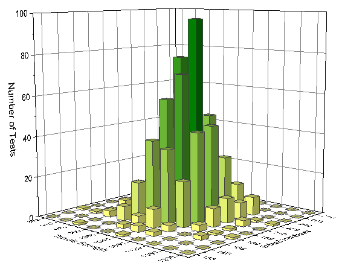
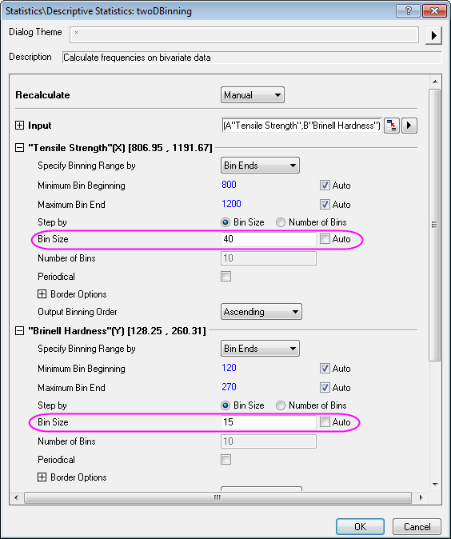
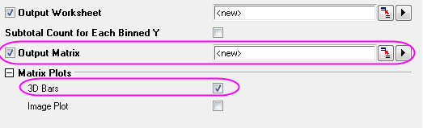
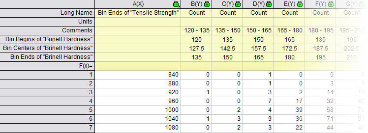
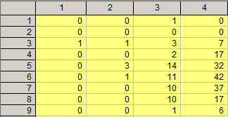
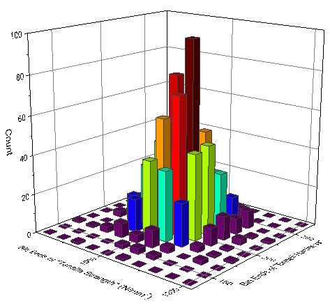
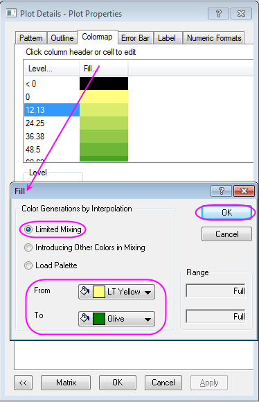
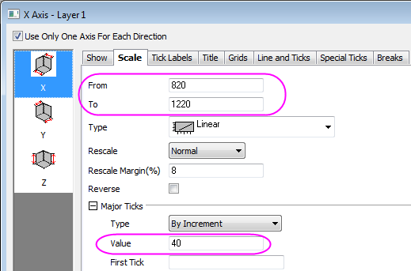

2D-Klasseneinteilung
2D-Binning
Zusammenfassung
Das Hilfsmittel 2D-Häufigkeitszählung/Klasseneinteilung zählt die Häufigkeiten von Daten mit zwei Variablen. Ein 3D-Balkendiagramm und/oder ein Bilddiagramm der Ergebnisse kann erzeugt werden, das eine grafische Darstellung der Datenverteilung beinhaltet.

Origin-Version mind. erforderlich: Origin 2015 SR0
Was Sie lernen werden
- Häufigkeiten von Daten mit zwei Variablen zählen
- 2D-Klasseneinteilung in ein 3D-Histogramm zeichnen
Schritte
Dieses Tutorial basiert auf dem Projekt: <Origin-Verzeichnis>\Samples\Tutorial Data.opj.
- Öffnen Sie Tutorial Data.opj und navigieren Sie zum Ordner 2D Frequency Count (Binning) und aktivieren Sie die Mappe 3D Histogram.dat.
- Markieren Sie Spalte A und Spalte B und wählen Sie im Menü Statistik: Deskriptive Statistik: 2D-Häufigkeitszählung/Klasseneinteilung, um den Dialog TwoDBinning aufzurufen.
- Legen Sie die folgenden Einstellungen im Dialog fest:
- Deaktivieren Sie das Kontrollkästchen Auto und setzen Sie die Einteilungsgröße für X auf 40.
- Setzen Sie die Einteilungsgröße für Y auf 15.

- Aktivieren Sie das Kontrollkästchen Ausgabematrix am Ende des Dialogs und 3D-Balken für Matrixdiagramme.

- Klicken Sie auf OK und Sie erhalten die folgenden Ausgaben.


Weitere benutzerdefinierte Anpassungen
- Klicken Sie doppelt auf das 3D-Histogramm, um den Dialog Details Zeichnung zu öffnen, gehen Sie zur Registerkarte Farbpalette, klicken Sie auf Füllung, um den Dialog Füllung aufzurufen, und legen Sie die Einstellungen für Füllung entsprechend der Abbildung unten fest.

Klicken Sie auf OK, um den Dialog Füllung zu schließen. Klicken Sie dann auf OK im Dialog Details Zeichnung, um auch diesen Dialog zu schließen.
- Klicken Sie doppelt auf die Achse, um den Dialog Achsen zu öffnen, und gehen Sie zur Registerkarte Skalierung, um die Skalierung für die XYZ-Achse entsprechend der untenstehenden Screenshots festzulegen:
- Legen Sie die Werte der Skalierung für die X-Achse (Symbol X) auf Von 820 Bis 1220 und die Großen Hilfsstrichen auf 40 fest.

- Legen Sie die Werte der Skalierung für die Y-Achse (Symbol Y) auf Von 127,5 Bis 277,5 und die Großen Hilfsstrichen auf 15 fest.
- Legen Sie die Werte der Skalierung für die Z-Achse (Symbol Z) auf Von 0 Bis 100 und die Großen Hilfsstrichen auf 20 fest.
- Ändern Sie die Titel für die X-, Y- und Z-Achse auf der Registerkarte Titel in Tensile Strength, Brinell Hardness bzw. Number of Tests. Klicken Sie auf OK, um die Einstellung anzuwenden, und schließen Sie den Dialog.